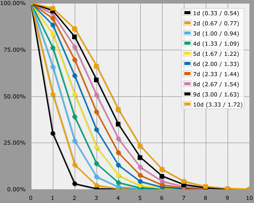
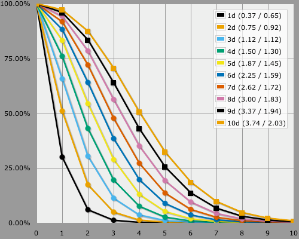
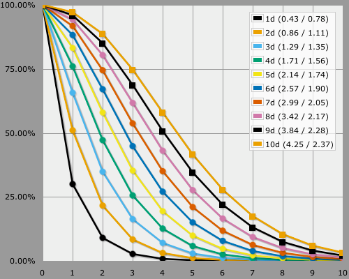

New World of Darkness
Illuminating the Odds
Lots of people like to know the odds for the New World of Darkness system. Put shortly, you roll a pool of d10s and count all 8s and higher as a success. Additionally, you reroll and add for each 10 you get. In some cases you can reroll on a 9 or even on an 8.
To get the odds in AnyDice, you need to use a custom function to get the desired explosion effect, like the following program does.
function: nwod R:n again N:n {
if N >= R { result: 1 + [nwod R again d10] }
result: N >= 8
}
NWOD: [nwod 10 again d10]
loop N over {1..10} {
output [lowest of 10 and NdNWOD] named "[N]d"
}
That program will roll a die at most ten times, which is more than enough. It then shows the results for pools with up to ten such dice in them. Finally, it also limits the number of successes to ten at most, to get rid of the long tails of highly unlikely outcomes.
Here are the at-least graphs for the three variants.


Note that the odds for at least one success are the same as the 10-again option. Only the odds for more than one success get a boost.
